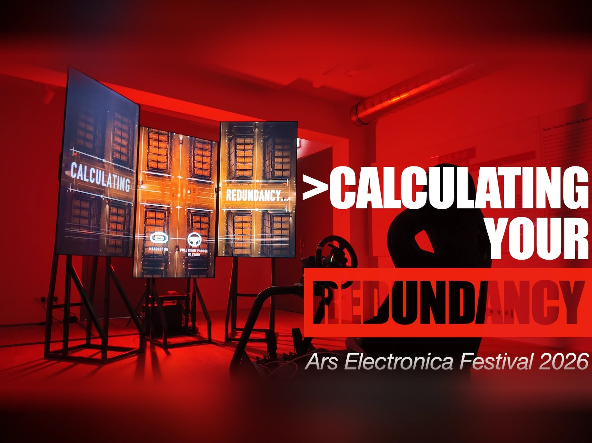
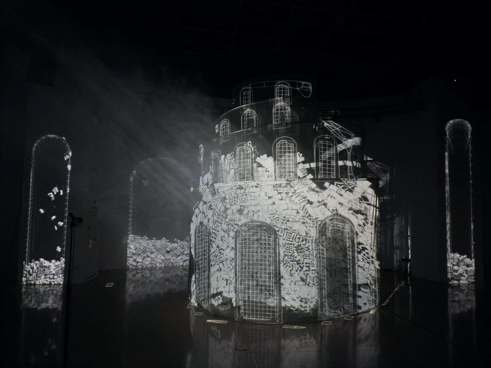
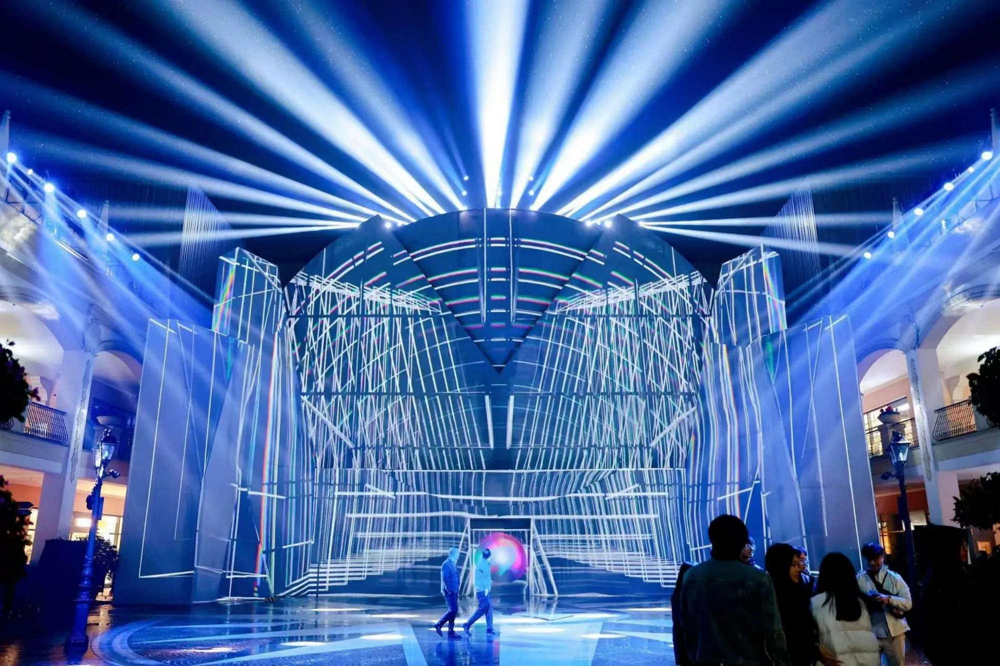
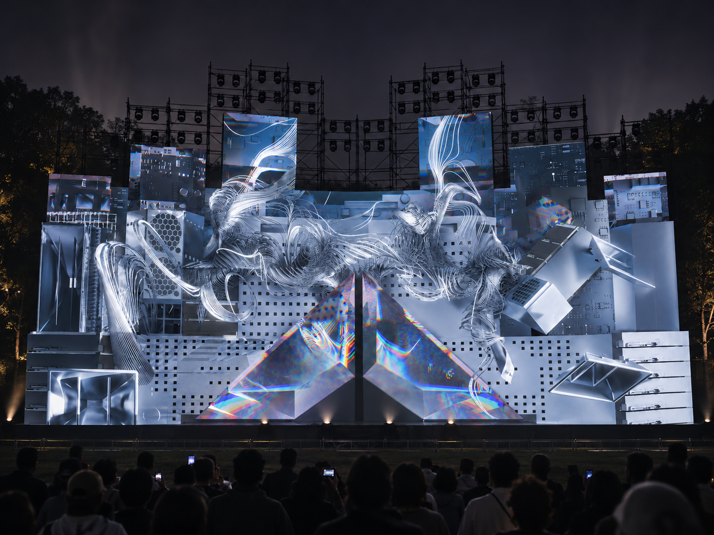

当技术拥有回声，它会生成怎样的我们？
当技术拥有回声，它会生成怎样的我们？Art Work 艺术创作
当技术拥有回声，它会生成怎样的我们？
你的冗余正在结算……
辩白书 Redo ID
Redo ID Null ID
Null ID
Enter ID
脱敏 Fight La Niña
Fight La Niña 第一步当技术拥有回声，它会生成怎样的我们？
第一步当技术拥有回声，它会生成怎样的我们？
你的冗余正在结算……
辩白书Redo IDNull ID
Enter ID
脱敏Fight La Niña第一步